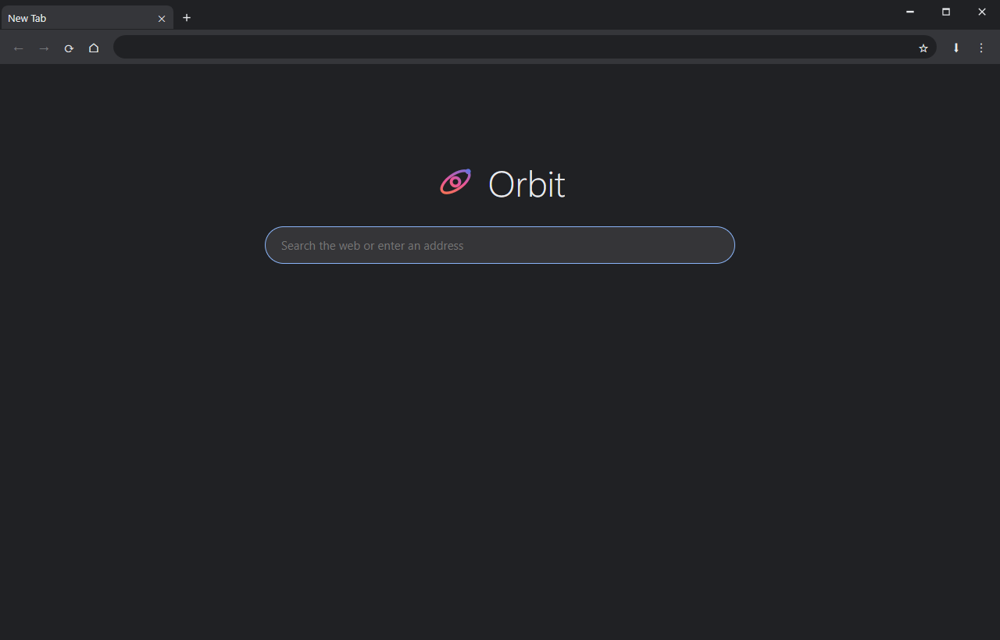

Orbit
A lightweight browser built on Chromium, designed to give pages as much room as possible.
Download for WindowsFree · Windows 10/11, 64-bit · about 250 MB · unzip and run Orbit.exe

Real Chromium
GPU-accelerated rendering and the web compatibility you expect.
Custom title bar
Tabs live in the window frame, so there is no wasted bar above them.
Split view
Two tabs side by side with a draggable divider.
Tab tear-off
Drag a tab out to open it in its own window, or into another Orbit window.
Bookmark folders
Nested folders, site icons, drag-and-drop manager, import and export.
Private by choice
Private windows that keep no history, and a built-in blocker for ads and trackers.
An ad blocker you control
Runs the standard EasyList and EasyPrivacy filter lists, shows what it blocked, and pauses per site.